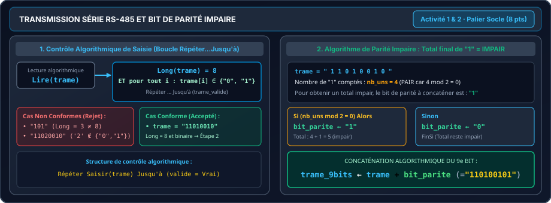

PALIER 🟢 SOCLE DE RÉUSSITE (8 points)
Sécurisation d'une liaison série industrielle RS-485 : saisie contrôlée d'une trame binaire de 8 bits et calcul du 9ème bit de parité impaire (Exercice 71).
Activité 1 — Saisie sécurisée & Validation d'une trame binaire (8 bits)
4 pointsTransmission industrielle (Liaison série RS-485 / UART) : Un capteur envoie un octet de données sous la forme d'une chaîne binaire de 8 caractères. Pour que la trame soit admissible par le modem, elle doit respecter deux critères stricts de conformité :

Critère 1 : Longueur exacte
La chaîne trame doit comporter exactement 8 caractères.
Critère 2 : Chiffres binaires
Chaque caractère $c$ de la chaîne doit obligatoirement être le symbole '0' ou
'1'.
Travail demandé :
-
Écrire une saisie contrôlée qui demande à l'utilisateur d'introduire une trame binaire et réitère la
saisie tant que la trame n'est pas conforme. Pour valider la trame à chaque tentative :
- Vérifier d'abord que la longueur est égale à 8.
- Parcourir la chaîne pour s'assurer que chaque caractère est bien un chiffre binaire.
-
Afficher un message d'erreur en cas de saisie invalide (ex:
"Trame invalide !").
| Saisie testée | Contrôle de longueur | Contrôle des symboles | Décision du programme |
|---|---|---|---|
"1101" |
Longueur = 4 (≠ 8) | Uniquement '0' et '1' | Rejetée $\rightarrow$ Redemander la saisie |
"11020010" |
Longueur = 8 | Présence de '2' (interdit) | Rejetée $\rightarrow$ Redemander la saisie |
"1101 010" |
Longueur = 8 | Présence d'un espace | Rejetée $\rightarrow$ Redemander la saisie |
"11010010" |
Longueur = 8 (OK) | Uniquement '0' et '1' (OK) | Validée $\rightarrow$ Poursuivre vers l'Activité 2 |
TP3_Nom_Prenom.py
et testez les cas de rejet ci-dessus avant de valider votre trame.
Activité 2 — Bit de parité impaire & Émission de la trame à 9 bits
4 pointsPour sécuriser la transmission sur la ligne RS-485, le modem émetteur ajoute à la fin de la trame un 9ème bit appelé bit de parité impaire.
Règle arithmétique de la parité impaire :
Le bit de parité est calculé de sorte que le nombre total de bits '1' dans la
trame soit strictement IMPAIR :
'1' (un total pair + 1 devient impair).
'0' (le total reste impair).
| Trame initiale (8 bits) | Nombre de '1' | Parité initiale | Bit de parité | Trame émise (9 bits) | Total de '1' émis |
|---|---|---|---|---|---|
| "11010010" | 4 | Pair | '1' | "110100101" | 5 (Impair ) |
| "10101000" | 3 | Impair | '0' | "101010000" | 3 (Impair ) |
Travail demandé :
- Calculer le bit de parité impaire de la trame binaire saisie dans l'activité 1, puis l'afficher.
TP3_Nom_Prenom.py et vérifiez
que pour "11010010", la trame finale affichée est bien "110100101".